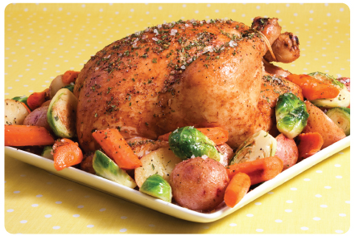

Roast Chicken w/Vegetables
Ingredients
4-5lbs whole chicken
1-1/2 cups baby carrots
1 large yellow onion coarsely chopped
1 tablespoons Tailai USA Minced Garlic
1 tablespoon Tailai USA Granulated Garlic
3 lbs small red potatoes, scrubbed
10-15 brussel sprouts cut in half (optional)
1- 1/2 c white wine
2 tablespoons butter
2 teaspoons Tailai USA Sea Salt
1 teaspoon Tailai USA Malabar Pepper
2 teaspoons Tailai USA Rustic Tuscan Seasoning Rub
Instructions
Preheat oven to 375°F.
Wash and dry chicken. Stuff with 1/2 cup baby carrots, 1 tablespoon minced garlic and 1/4 Vidalia onion. Soften butter and smear it all over the chicken. Place in roasting pan with potatoes, remaining onion and carrots, evenly in pan around the chicken. Pour wine all over chicken and potatoes. Season with salt, pepper, rustic tuscan seasoning, minced garlic, and granulated garlic (to taste). Cover tightly with foil.
Roast 1 1/2 hours. Uncover; baste potatoes and chicken. Roast for additional 1/2 hour to 45 minutes or until chicken is tender and nicely browned.